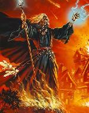

Forums galactiques > Taverne galactique : lieu de discussion informel > bonjour
Pages : 1
| Traxdata Réputation à la taverne : 0  03/09 ETU 19:35 | Score : -1 Détails Je suis nouveau et j'espère pouvoir intégrer une coalition.Je n'ai pas beucoup de ressource et aimerais en avoir plus .Dès que je serait plus puissant j'aiderrait a mon tour les jeunes commandant en diffculté comme moi.J'éspère que vous serez nombreux a bien vouloir m'aidez.
Je vous remerci d'avance Traxdata | ||
| Grabeuh Réputation à la taverne : 1675  04/09 ETU 00:28  | Score : 0 Détails Quel est votre profil (fédéré, alliantiste ou guildéen ? déja, ca peut srvir comme info).
Parlons en de manière plus approfondie par MP, je vous prie. | ||
| Traxdata Réputation à la taverne : 0 04/09 ETU 09:30 | Score : 0 Détails D'accoerd Grabeuh.
|
Pages : 1
Forums galactiques > Taverne galactique : lieu de discussion informel > bonjour